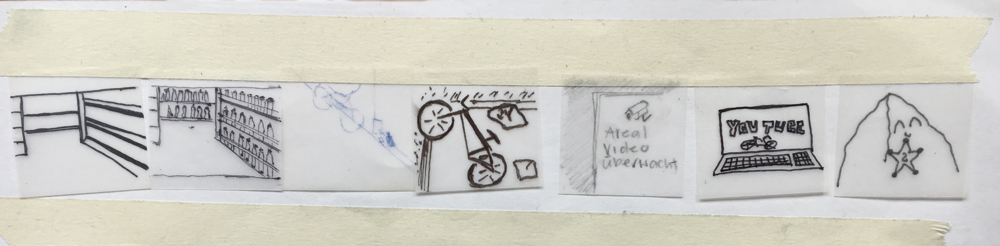

Der Erste Tag.
Einstieg experimentelles Erzählen
Am ersten Tag, als wir das erste Mal das Modul «experimentelles Erzählen» hatten, lernten wir unseren Dozenten, Basil Vogt, kennen. Basil Vogt ist ein Spezialist für Trick- und Animationsfilme. Er ist ein Profi im experimentellen Erzählen.
Dies hat sich bereits am ersten Tag erwiesen. Mit Hilfe von Basil haben wir eine kleine Kurzgeschichten erfunden, in welcher wir eine Technik von ihm angewandt haben. Die Aufgabe war es, als Menschen eine Kamera zu imitieren. Mit geschlossenen Augen wurden
wir an einen Ort geführt. Dort angekommen durften wir für 10 Sekunden unsere Augen öffnen, damit wir uns das Gesehene einprägen konnten. Danach musste jeder innerhalb meiner Gruppe das Gesehene skizzieren (Das Bild im Kopf zu Blatt bringen). Die Skizzen mussten nun in eine Reihenfolge
gebracht werden und wurden nachdem mit weiteren Skizzen zu einer Geschichte zusammengeführt. Unsere skizzierten Bilder ergaben zusammen folgende Geschichte:
Ein Limonadendieb hat im Supermarkt das Limonadenregal leergeräumt. Er hat ein Fahrrad als Fluchtfahrzeug
geklaut. Während der Flucht hat er eine Flasche Limonade getrunken. Dabei wurde ihm schlecht und er übersah einen Stein. Er fiel zu Boden. Das Areal, in wlechem er zu Boden fiel, wurde per Videokamera überwacht. Kurz darauf landete das Video auf YouTube. Der Stein, welcher den Dieb vom Fahrrad warf, wurde als Held der Geschichte gefreiert.
Der Stein bekam für seine Tat einen Sheriffsstern.
Die Bilder zu unserer Geschichte:

Weiter >